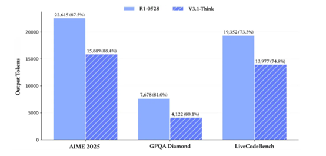

Chinese artificial intelligence company DeepSeek has launched the new generation large model DeepSeek-V3.1, marking a key step forward in AI technology towards higher efficiency and stronger intelligence.
Through innovative hybrid reasoning architecture, DeepSeek-V3.1 achieves free switching between thinking and non-thinking modes, significantly improving response speed while maintaining excellent performance. The model excels in programming agents, search agents, and complex reasoning tasks, while the API interface is fully upgraded, supporting 128K context length and more flexible function calling capabilities.
- Hybrid reasoning architecture: One model simultaneously supports both thinking and non-thinking modes
- Higher thinking efficiency: Compared to DeepSeek-R1-0528, DeepSeek-V3.1-Think can provide answers in shorter time
- Stronger agent capabilities: Through post-training optimization, the new model shows significant improvement in tool usage and agent tasks
The official App and web version models have been simultaneously upgraded to DeepSeek-V3.1. Users can freely switch between thinking and non-thinking modes through the "Deep Thinking" button.
DeepSeek API has also been upgraded, with deepseek-chat corresponding to non-thinking mode and deepseek-reasoner corresponding to thinking mode, both with context extended to 128K. Meanwhile, the API Beta interface supports strict mode Function Calling to ensure output functions meet schema definitions. (See official documentation: https://api-docs.deepseek.com/zh-cn/guides/function_calling)
Additionally, official support for Anthropic API format has been added, allowing everyone to easily integrate DeepSeek-V3.1 capabilities into the Claude Code framework. (See official documentation: https://api-docs.deepseek.com/zh-cn/guides/anthropic_api)
1. Hybrid Reasoning Architecture: A New Experience for Intelligent Interaction
The most notable innovation of DeepSeek-V3.1 is its hybrid reasoning architecture (Hybrid Reasoning Architecture). This design allows a single model to simultaneously support "Thinking Mode" (ThinkMode) and "Non-Thinking Mode" (Non-ThinkMode), with users able to freely switch by simply clicking the "Deep Thinking" button in the official App or web version.
In thinking mode, the model performs in-depth reasoning on complex problems, ensuring answer accuracy and logic. Non-thinking mode is suitable for daily conversations and simple queries, providing faster responses.
The advantage of this hybrid architecture lies in its balance between response speed and answer quality. According to DeepSeek's official test data, V3.1-Think achieves equal average performance across various tasks compared to R1-0528 while reducing output tokens by 20%-50%, truly realizing the efficiency improvement of "less is more".
2. Performance Breakthrough: Excellent Performance in Multiple Benchmark Tests
DeepSeek-V3.1 demonstrates excellent performance in multiple internationally authoritative benchmark tests, achieving significant improvements particularly in programming, search, and complex reasoning tasks.
In programming agent testing, V3.1 scored 66.0% in SWE-bench Verified (real-world software engineering task evaluation), a significant improvement compared to R1-0528's 44.6%.
In complex search tests requiring multi-step reasoning (browsecomp) and multidisciplinary expert-level problem tests (HLE), DeepSeek-V3.1's performance has significantly surpassed R1-0528, with HLE test pass rate reaching 29.8%.
The model also performs excellently in academic evaluations, scoring 88.4% in AIME 2025, 80.1% in GPQA Diamond, and 74.8% in LiveCodeBench, all outperforming R1-0528's corresponding performance.
Programming Agent Performance Comparison
| Benchmarks | DeepSeek-V3.1 | DeepSeek-V3-0324 | DeepSeek-R1-0528 |
|---|---|---|---|
| SWE-bench Verified | 66.0 | 45.4 | 44.6 |
| SWE-bench Multilingual | 54.5 | 29.3 | 30.5 |
| Terminal-Bench | 31.3 | 13.3 | 5.7 |
In code repair evaluation SWE and complex task testing in command-line terminal environments (Terminal-Bench), DeepSeek-V3.1 shows significant improvement compared to previous DeepSeek series models.
Search Agent Performance Comparison
| Benchmarks | DeepSeek-V3.1 | DeepSeek-R1-0528 |
|---|---|---|
| Browsecomp | 30.0 | 8.9 |
| Browsecomp_zh | 49.2 | 35.7 |
| HLE | 29.8 | 24.8 |
| xbench-DeepSearch | 71.2 | 55.0 |
| Frames | 83.7 | 82.0 |
| SimpleQA | 93.4 | 92.3 |
| Seal0 | 42.6 | 29.7 |
DeepSeek-V3.1 has achieved significant improvements in multiple search evaluation metrics. In complex search tests requiring multi-step reasoning (browsecomp) and multidisciplinary expert-level problem tests (HLE), DeepSeek-V3.1 performance has significantly surpassed R1-0528.
3. Efficiency Improvement: Chain-of-Thought Compression Technology Reduces Computational Consumption
DeepSeek-V3.1 achieves significant efficiency improvement through chain-of-thought compression training technology (Chain-of-Thought Compression Training). This technological innovation enables the model to reduce output token count by 20% to 50% while maintaining the same task performance level.
Reduced token consumption means users can process more content under the same budget, particularly suitable for high-frequency, large-scale application scenarios such as long-text generation and batch copywriting creation.
Efficiency improvement is also reflected in response speed. Compared to DeepSeek-R1-0528, DeepSeek-V3.1-Think can provide answers in shorter time, greatly improving user experience.
Thinking Efficiency Improvement
Our test results show that after chain-of-thought compression training, V3.1-Think maintains equal average performance across various tasks compared to R1-0528 while reducing output token count by 20%-50%.
With basically equal scores across various evaluation metrics (AIME2025:87.5/88.4, GPQA:81/80.1, liveCodeBench: 73.3/74.8), the token consumption comparison chart between R1-0528 and V3.1-Think is as follows

Meanwhile, V3.1's output length in non-thinking mode has been effectively controlled. Compared to DeepSeek-V3-0324, it can maintain the same model performance while significantly reducing output length.
4. Enhanced Agent Capabilities: Leap in Tool Calling and Multi-Task Processing
DeepSeek-V3.1 achieves a qualitative leap in agent capabilities. Through post-training optimization, the model shows significant improvement in tool usage and agent task performance.
In programming-related tasks, V3.1 demonstrates stronger code understanding and generation capabilities. It can not only provide more comprehensive code solutions but also consider more potential possibilities and provide detailed usage instructions.
In search agent aspects, V3.1 significantly surpasses older versions in Chinese web search and multimodal composite reasoning scores, performing more excellently in complex information retrieval and integration tasks.
The model has also made significant progress in complex task processing testing in terminal environments (Terminal-Bench), scoring 31.3%, demonstrating stronger practical application capabilities.
5. API and Open Source Ecosystem: Comprehensive Upgrade of Developer Experience
The release of DeepSeek-V3.1 also brings comprehensive upgrades to the API interface. deepseek-chat corresponds to non-thinking mode, deepseek-reasoner corresponds to thinking mode, and both have context length extended to 128K.
The API Beta interface supports strict mode Function Calling, ensuring output functions meet schema definitions and providing a more stable and reliable development experience.
Notably, DeepSeek-V3.1 achieves native compatibility with Anthropic API for the first time, allowing users to integrate DeepSeek just like calling Claude or Anthropic ecosystem models.
This means developers can use DeepSeek-V3.1's reasoning and conversation capabilities in all environments supporting AnthropicAPI by configuring API addresses and keys, greatly reducing integration barriers.
Model Open Source
V3.1's Base model underwent additional expansion training based on V3, adding a total of 840B tokens training. Both Base model and post-training model have been open sourced on Huggingface and ModelScope.
Base Model:
- Hugging Face: https://huggingface.co/deepseek-ai/DeepSeek-V3.1-Base
- ModelScope: https://modelscope.cn/models/deepseek-ai/DeepSeek-V3.1-Base
Post-Training Model:
- Hugging Face: https://huggingface.co/deepseek-ai/DeepSeek-V3.1
- ModelScope: https://modelscope.cn/models/deepseek-ai/DeepSeek-V3.1
It should be noted that DeepSeek-V3.1 uses UE8M0 FP8 Scale parameter precision. Additionally, V3.1 has made significant adjustments to tokenizer and chat template, showing clear differences from DeepSeek-V3. Users with deployment requirements are advised to carefully read the new version documentation.
View Official API Documentation
6. Price Adjustment: New Pricing Standards Effective from September 6
With the release of the new model, DeepSeek has also announced API price adjustment plans. Starting from early morning September 6, 2025 Beijing Time, DeepSeek will adjust open platform API interface calling prices, implement new pricing tables, and cancel nighttime discounts.
DeepSeek-V3.1 API Pricing
Input Price (Cache Miss): 0.5 RMB/million tokens
Input Price (Cache Hit): 4 RMB/million tokens
Output Price: 12 RMB/million tokens
Before September 6, all API services will continue to be billed according to the original pricing policy, and users can continue to enjoy current discounts. To better meet user calling demands, DeepSeek has further expanded API service resources.
7. Future Outlook: A Key Step Towards the Agent Era
The release of DeepSeek-V3.1 is seen as a key step for DeepSeek towards the agent era. Through significant improvements in tool calling and agent tasks, V3.1 provides stronger support for future AI application scenarios.
Although the current version still has some limitations, such as text-focused interaction and insufficient multimodal interaction, DeepSeek-V3.1's continuous innovation and development in reasoning capabilities lay a solid foundation for future technological breakthroughs.
As technology continues to advance, the practicality and efficiency of such models will have profound impacts on the industry, providing support for more enterprises and developers.
The release of DeepSeek-V3.1 is not just a technical upgrade but an important evolution in intelligent interaction experience. Its hybrid reasoning architecture allows users to freely switch thinking modes in different scenarios, truly achieving "on-demand allocation" of AI intelligence.
With the implementation of new API pricing policies on September 6, the DeepSeek platform will welcome more developers and enterprise users. This AI transformation characterized by efficiency, economy, and intelligence is redefining the standards of intelligent content production, helping users gain advantage in the AI-driven creation revolution.